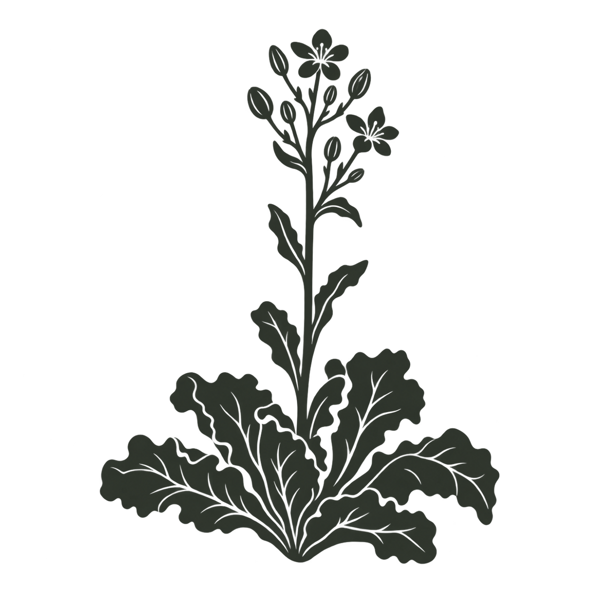
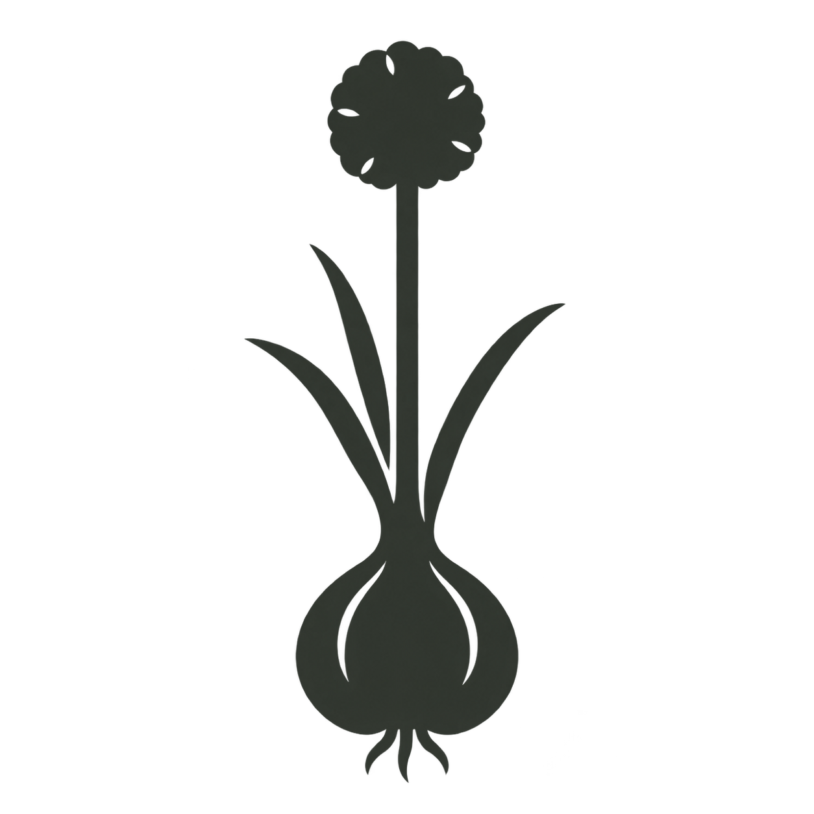

A dedicated silhouette for the onions-and-shallots Key Risks card. One onion bulb with narrow leaves and a tall stem carrying a round flower head.

32px
32pxApproved by John and installed for onions and shallots. Other crop assignments and gardening data are unchanged.
Metric page proof · Imperial page proof · Transparent PNG

Created with built-in image generation. Prompt and provenance. Botanical context: RHS bolting guide.